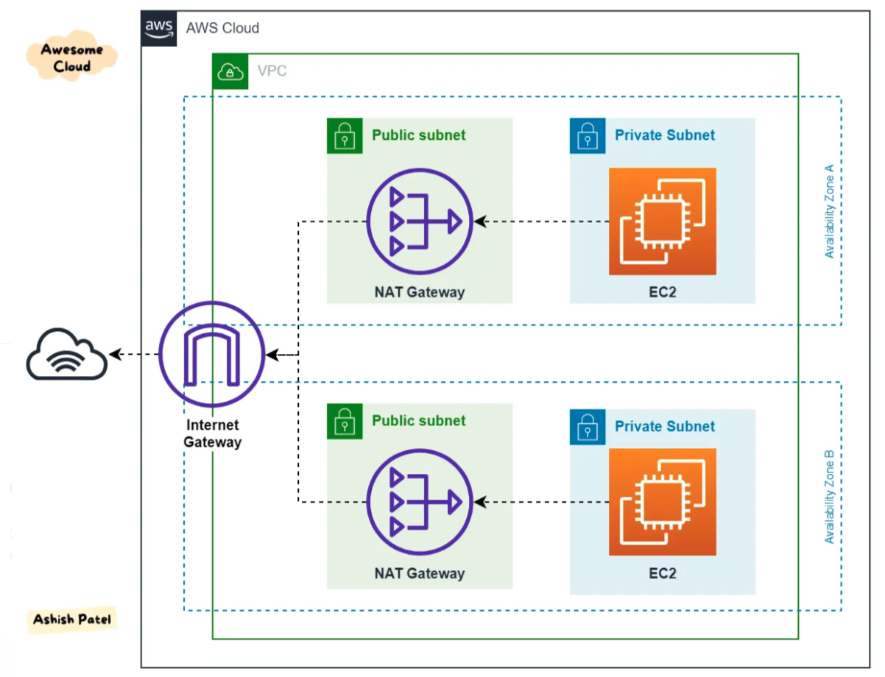

Gateway¶
VPC外への通信を行う際にはVPCに紐づけたGatewayを経由して通信を行う。 Gatewayとは関門や入り口を意味し、通信時にはGatewayを経由する事で異なるネットワーク間の通信が可能となる。
AWSでは、複数のGatewayを利用する事ができるが、その役割を大きく分けると2つ
インターネットアクセス
VPC内のリソースがインターネットへアクセスできるようにする
インターネットからVPC内のリソースにアクセスできるようにする
プライベートネットワークアクセス
特定のAWSサービスへプライベートにアクセスできるようにする
他のVPCへプライベートにアクセスできるようにする
VPC内のリソースがオンプレにアクセスできるようにする
それぞれの役割ごとに設定できるGatewayを整理したものが下表
Gateway名 |
分類 |
役割 |
|---|---|---|
Internet Gateway |
インターネットアクセス |
VPC内のリソースにインターネットアクセスを許可 |
NAT Gateway |
インターネットアクセス |
プライベートサブネット内のリソースがインターネットにアクセスするための中継 |
GW型のVPCエンドポイント |
プライベートアクセス |
Gateway型のVPCエンドポイントを作成する特性のAWSサービスへのプライベート通信に利用 |
仮想プライベート Gateway |
プライベートアクセス |
VPCとオンプレのVPNに利用 |
Transit Gateway |
プライベートアクセス |
複数のVPCやオンプレなどの統合に利用 |
IGW¶
VPC内部から、インターネットへ通信を行いたい場合にはVPCにIGWを紐付ける。 IGWは、VPCとインターネットのルーティングやVPC内のプライベートIPとパブリックIPの変換（NAT）の機能を提供する。 IGW自体の冗長性やスケーリングはAWSによって行われるマネージドサービス。
IGWの設定¶
IGWはVPC1つだけ作成、アタッチする。VPC内全てのサブネットで利用する事が可能になる。 ルートテーブルを利用して、IGWへの通信経路を確保すると、そのサブネットはパブリックサブネットと呼ばれ、インターネットとの双方向の通信が可能となる。一方IGWとの紐付けを定義しないサブネットはプライベートサブネットと呼ばれる。
インターネットとの通信¶
AWSリソースがインターネットと通信をする場合、IGWへの接続だけでなく、パブリックIPが必要となる。 AWSリソースは基本的にプライベートIPを利用してVPC内の通信を行う。 インターネットへの通信を行う際にはIGWはアクセス元のプライベートIPとパブリックIPの変換を行うNATの役割も果たしている。
NATGW¶
NATGWはNATの役割を果たすGWであり、プライベートサブネットに紐づけることによって、プライベートサブネットからインターネットへの通信はできるが、インターネットからプライベートサブネットの通信は遮断する構成を実現する。 これにより、インターネットからの通信は拒否したいが、インターネット上のベンダーサイトからパッチを取得したいケースなどに適用できる。
NAT GWの設定¶
パブリックサブネットでEIPを取得
パブリックサブネットでNATGW作成
NATGWにEIPを付与
プライベートサブネットのルートテーブルで0.0.0.0/0でnatgwをターゲットに指定
 AWS — Difference between Internet Gateway and NAT Gateway
GW型のVPCエンドポイント¶
VPC Endpointを利用する事で、VPC外のAWSサービスに対して、インターネットを経由せずAWS内の通信経路でAWSのサービスにアクセスする事ができる。VPC Endpointにはインターフェース型とGateway型が存在する。 Gateway型を提供しているサービスは、S3とDynamoDBである。
GW型のVPCエンドポイントを作成し、ルートテーブルに設定を行うことでVPCエンドポイント経由の通信が行われる。 その際、送信先としてはpl(Prefix List)を用いる。 PLとは、S3もしくはDynamoDBのパブリックIPアドレス範囲の一覧であり、AWSが提供している。
仮想プライベートGW¶
オンプレとのVPN接続やDirectConnectで利用される。
Transit GW¶
オンプレや他のAWSとの統合的な接続の際に利用される。